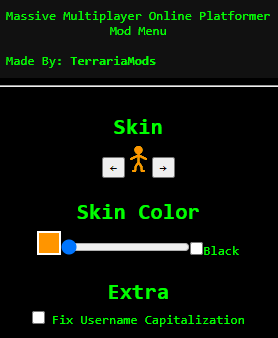
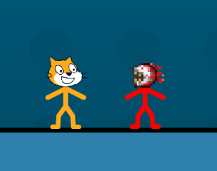
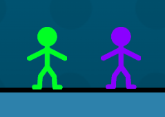

Massive Multiplayer Platformer v1.3
Scratch
Turbowarp
Features
Mod Menu

Custom Skins
Only Visible to Others With the Hack

Custom Colors
Only Visible to Others With the Hack

Fixed Username Capitalization
Visible to Everyone

How to Download
Option #1
Drag this to Your Bookmarks/Favorites Bar
Option #2
Bookmark/Favorite Any Website
Change the URL of the Bookmark to the Code Below
javascript:(function()%7B(async () %3D> eval(await (await fetch('https%3A%2F%2Fraw.githubusercontent.com%2FTerrariaMods-Scratch%2Fterrariamods-scratch.github.io%2Fmain%2Fhacks%2Fmmo%2Fhack.js')).text()))()%3B%7D)()%3B
How to Use
Click the Bookmarklet While on Scratch or Turbowarp to Use
Create a Custom Skin
Disclaimer
All Skins Uploaded will be Manually Evaluated to Ensure they Follow Scratch's Community Guidelines
It May Take Several Hours/Days for a Skin to be Approved and Added
How To
Edit the "Player" Sprite in the Game
Message TerrariaMods with a link to the new Player sprite
Hacks are Made to Support Online Play
Share With Others for the Best Experience